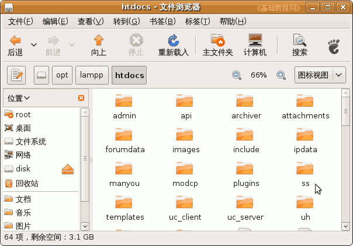
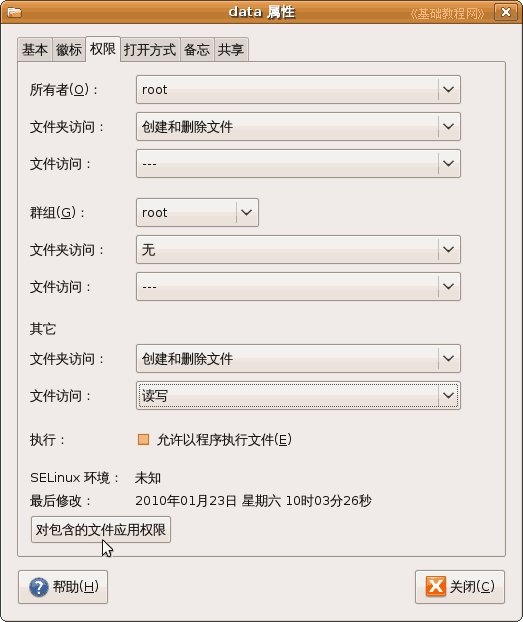
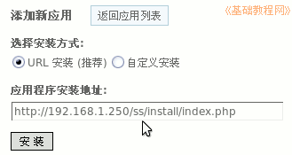
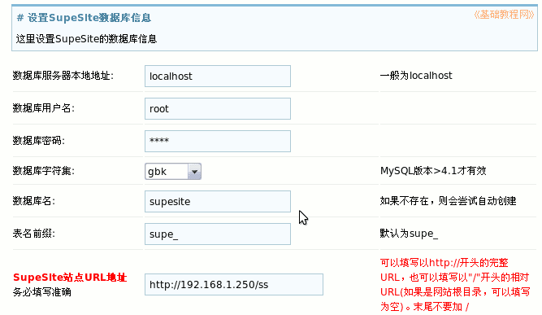
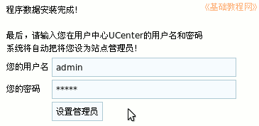
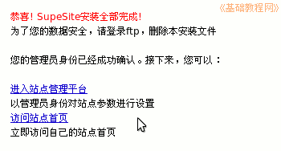

Discuz!论坛安装教程
作者：TeliuTe 来源：基础教程网
门户是展示和发布的平台，是一个网站的综合页面，下面我们来看一个练习；
1、安装门户
1）下载SupeSite安装包，用管理员身份打开，先看一下readme文件，
再把upload解压到网站根目录，把文件夹名称改为ss，设置属性里的其它权限为“访问和只读”，并应用到包含的文件；

2）打开ss文件夹，将 config.new.php 文件重命名为config.php，
设置config.php的属性为“读写”，设置文件夹 attachment/、cache/、channel/、html/、log/、styles/、model/、data/、uc_client/data/ 文件夹为“创建删除和读写”，并应用到包含的文件；；

3）登录“论坛－管理中心－UCenter－应用管理－添加应用”，输入ss的地址，点安装；

4）按提示一步一步，在数据库信息那儿，用户名填写root密码为mysql的密码，默认为root或者为空；
数据库名填写supesite，这个是给门户用的数据库；

5）点下一步继续自动安装，在管理员那儿，用原来的admin和密码，也可以新增一个；

6）然后完成安装，可以进入管理平台和空间主页，把这两个网址记一下；

本节学习了安装门户的基本方法，如果你成功地完成了练习，请继续学习下一课内容；
本教程由86团学校TeliuTe制作|著作权所有
基础教程网：http://teliute.org/
美丽的校园……
转载和引用本站内容，请保留版权信息和本站链接。